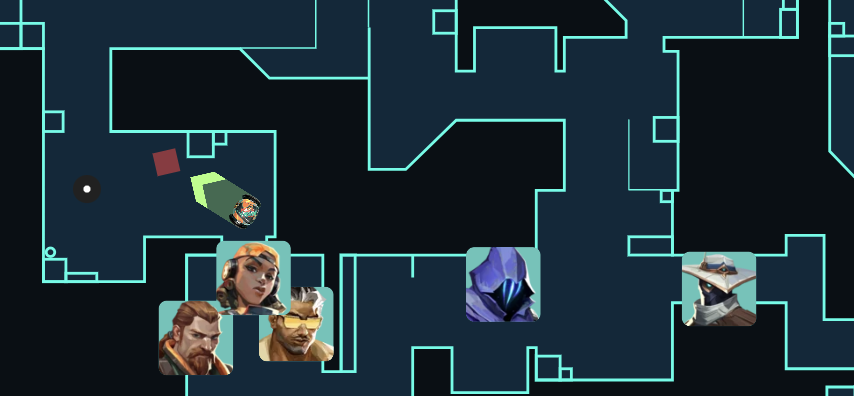
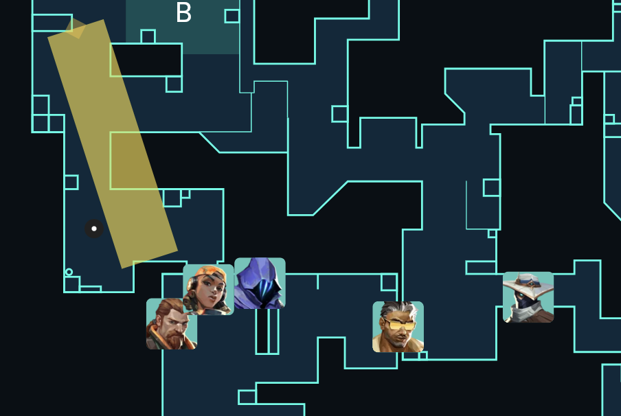

more passive mid, flows into fast b
Omen rotate to garage for hit

could also use Breach stun but need to wait for stun to come back for hit (Obscure the rest of the map)
Cypher could put cage and pop midround if using Breach stun